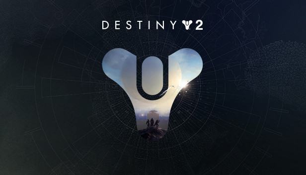

Destiny 2, what armor chest piece is the best for Titans?

Destiny 2 is a popular MMO/FPS that made its debue on September 6, 2017 and it took the nation by storm. Destiny 2 is known for having its stylus and buffed gear thats offered to the users who play the game however, one question always stands amongst players, which armor chest piece is the best one in the game for the class of Titans?
Well, after doing extensive research I can provide an answer to most players that will be deemed as satisfactory. If you are looking to build a strong titan class then your first priority would be the The Heart of Inmost Light with high discipline and recovery stats. If you are interested in adding Mods to your gear, "Bountiful Wells" would be your go to. With this Chest Piece you would want to run the Solar Subclass.
This chest piece will provide an overall advantage that will be able to serparate you from your opponents. With this piece, you'll be able to conduct raids, do strikes, run dungeons, and face off with other players in the pvp game modes. No other piece in the game can compare to this one if you're looking to buff your titan. Who knows, maybe a new piece will arise that will surpass this one in the future. If thats the case then back to the books for me.
| Gear Name | Power level |
|---|---|
| Bountiful Wells | 1487 |
| Heart of Inmost Light | 1530 |